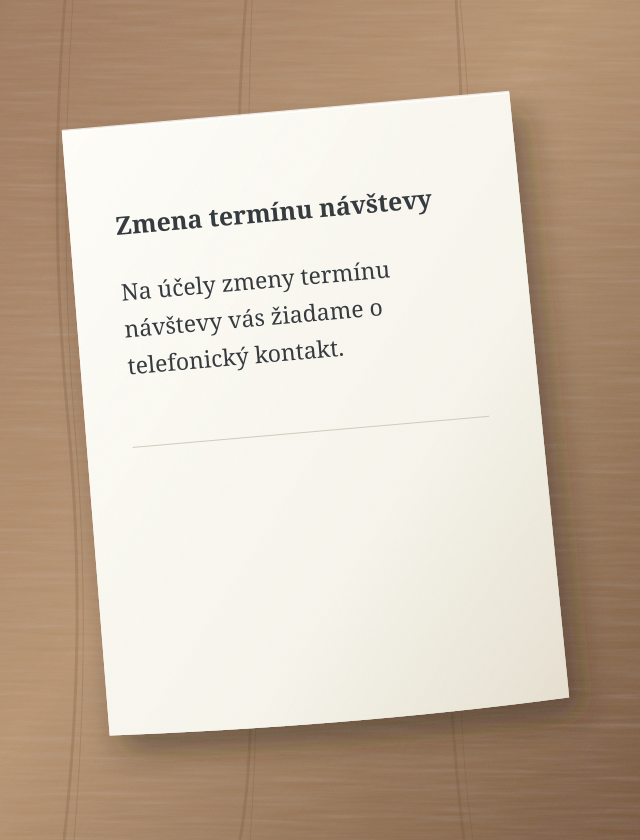
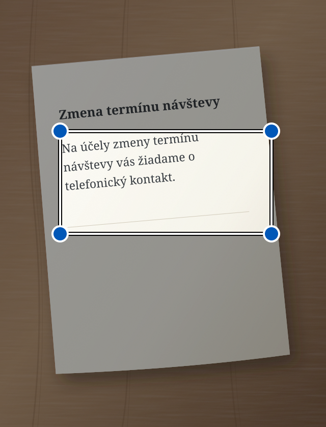

Na účely zmeny termínu návštevy vás žiadame o telefonický kontakt.
↳ Zjednodušený text
Chcete zmeniť termín návštevy? Zavolajte nám.
Ukážkový príklad zjednodušenia textu.
Ľahšie pochopiť. Ľahšie konať.
Jednoduchý jazyk je pre každého.
Sedno tvoríme najmä pre ľudí so sluchovým postihnutím a ľudí, ktorí majú problém porozumieť zložitým textom. Jednoduchšie slová môžu pomôcť každému z nás.
Od slov k významu
Dva jednoduché kroky.
01
Pridajte text
Napíšte ho, vložte, odfoťte alebo povedzte nahlas.
02
Zjednodušte alebo opravte
Vyberte, čo potrebujete. Výsledok sa objaví v tom istom poli. Môžete ho ďalej upravovať.
i AI sa môže pomýliť. Dôležité informácie skontrolujte v origináli.
Pozrite sa, čo stlačiť
Sedno krok za krokom.
Každý príklad ukazuje jednu činnosť. Krúžok ukazuje, čo stlačiť. Šípka ukazuje, čo nasleduje.
Sú to zjednodušené nákresy obrazoviek. Texty sú príklady. Vzhľad aplikácie sa môže mierne líšiť.
Zjednodušte písaný text
Máte zložitú správu? Napíšte ju alebo vložte do Sedna.
1 Napíšte text a stlačte „Zjednodušiť“.
Skontrolujte, že je vybraný režim Zjednodušiť.
Sedno – zjednodušiť text:
Na účely zmeny termínu návštevy vás žiadame o telefonický kontakt.
Zjednodušiť
2 Prečítajte si jednoduchší text.
Výsledok sa objaví v tom istom poli. Môžete ho upraviť.
Zjednodušený text
Chcete zmeniť termín návštevy? Zavolajte nám.
AI sa môže mýliť
Zjednodušiť
Zjednodušte text z fotografie
Máte list na papieri? Odfoťte ho v Sedne.
1 Stlačte fotoaparát.
Otvorí sa fotoaparát v aplikácii.
Sedno – zjednodušiť text:
Napíšte alebo vložte text
Zjednodušiť
2 Stlačte „Odfotografovať“.
Držte telefón tak, aby bolo dobre vidieť celú stranu a text.
Odfotografovať text

Odfotografovať
3 Označte text a stlačte „Zjednodušiť“.
Posuňte rohy rámčeka okolo textu, ktorý chcete zjednodušiť.
Označiť text
Posuňte rohy rámčeka a označte text.

Zjednodušiť
4 Prečítajte si jednoduchší text.
Sedno prečíta text z fotografie a zjednoduší ho.
Zjednodušený text
Chcete zmeniť termín návštevy? Zavolajte nám.
AI sa môže mýliť
Zjednodušiť
Fotografia zostáva v telefóne. AI dostane len rozpoznaný text. Ak sa zjednodušenie nepodarí, text zostane v poli a môžete ho upraviť.
Zjednodušte hovorený text
Chcete radšej hovoriť než písať? Vyberte režim Zjednodušiť.
1 Stlačte mikrofón.
Ak telefón požiada o prístup k mikrofónu, povoľte ho.
Sedno – zjednodušiť text:
Napíšte alebo vložte text
Zjednodušiť
2 Povedzte text nahlas.
Hovorte vo vybranom jazyku. Na konci urobte krátku prestávku.
Hovorte vo vybranom jazyku
Sedno mení reč na text.
3 Prečítajte si jednoduchší text.
Po 1,5 sekunde ticha Sedno automaticky zjednoduší rozpoznaný text.
Zjednodušený text
Chcete zmeniť termín návštevy? Zavolajte nám.
AI sa môže mýliť
Zjednodušiť
Reč sa rozpoznáva v telefóne. Potrebujete Android 13 alebo novší, podporované zariadenie a stiahnutý model vybraného jazyka. Nahrávanie trvá najviac minútu. Stop nahrávanie zruší.
Opravte písaný text
Chcete opraviť správu? Pred písaním vyberte režim Opraviť.
1 Napíšte text a stlačte „Opraviť“.
Režim zmeníte šípkami nad veľkým tlačidlom.
Sedno – opraviť text:
zajtra nemožem prist na stretnutie
Opraviť
2 Prečítajte si opravený text.
Sedno opraví chyby. Skontrolujte, či text hovorí to, čo chcete.
Opravený text
Zajtra nemôžem prísť na stretnutie.
AI sa môže mýliť
Opraviť
Vypočujte si opravený text
V režime Opraviť môže telefón prečítať text z poľa nahlas.
1 Stlačte reproduktor.
Najprv opravte text. Potom stlačte reproduktor vľavo.
Čítanie prebieha v telefóne. V nastaveniach telefónu si stiahnite hlas vybraného jazyka na čítanie bez internetu.
Jazyk
Vyberte si svoj jazyk.
Sedno podporuje 13 jazykových variantov. V aplikácii otvorte menu a vyberte Jazyk. Výber platí aj pre text, diktovanie a čítanie. Sedno zjednodušuje a opravuje; neprekladá medzi jazykmi.
Vaše texty. Vaša kontrola.
Súkromie od začiatku.
Fotografie a zvuk zostávajú v telefóne. Do AI sa odosiela iba text.